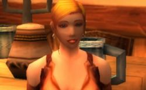

Les Terres de Kirin Tor
Marle
Points : 1

Joué par :
[ Information masquée ]
Age : 26
Lieu de naisance : Inconnu
Signe de naissance : Panda
Sexe : Femme
Race : Humain
Faction : Alliance
Formation : Guerrier
Niveau : 27
Guilde :
Artisanat 1 : Forgeron
Artisanat 2 : Mineur
Envoyer un MP
Informations hrp : Petite blonde pétillante qui se comporte comme une elfe de la nuit.
Description : Bonjour, mon nom est Marle et je suis une guerrière encore en cours d'apprendtissage mais je suis de nature persévérante et j'aime beaucoup ma vie malgrès des débuts assez difficiles. En effet, j'ai été abandonnés par mes parents peu après ma naissance et j'ai été trouvée par un couple d'Elfs de la Nuit du Nom de Rikkyu et Taichin. Ils m'ont élevée comme leur propre fille et m'ont appris la valeur de la vie. Je les considère d'ailleurs comme mes parents. Je ne me considère d'ailleur pas comme une humaine mais comme une Elfe de coeur, comme le dit si bien mon père.
Je parcours actuellement les terres d'Azeroth avec mon amie Paige afin de parfaire mon apprentissage et atteindre la force et la connaissance ultime du guerrier (le 60e Cercle). J'en profite pour aider qui en a besoin et utiliser toutes mes compétences à protéger l'Alliance de ces mécréants de la Horde.
Je ne souhaite actuellement pas intégrer une guilde car je suis pleinement satisfaite de ma vie sociale telle qu'elle est aujourd'hui. Etre aux cotés de mes parents et de mon amie.